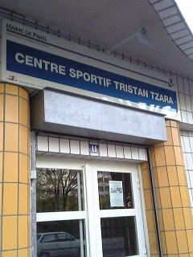

| 《モンパルナス墓地》 |
|
 |
パリに行ったら是非お墓参りを。いつも何かしらお供えがしてあって、全世界の人と一緒にツァラを偲べるところです。この時はアルファベットのブロックが置いてありました。ダダイストならではのお供え物ラインナップです。
案内パンフレットが置いてあるので、お墓の位置はそれで分かります。
CIMETIÈRE MONTPARNASE
3,boulevaard Edgar-Quinet,
75014Paris
Tél : 01 44 10 86 50
11月6日から3月15日まで
月〜金 8：00〜17：30
土 8：30〜17：30
日祝日 9：00〜17：30
3月16日から11月6日まで
月〜金 8：00〜18：00
土 8：30〜18：00
日祝日 9：00〜18：00 |
 |
 |
 |
《ジュノー通り》 |
| アドルフ・ロース建築のツァラの家が今も残っています。ですが他の人が今も住んでいるので遠巻きに眺めるだけにしましょう。ツァラがこの通りを通ったんだろうなーとかこの店でツァラは買い物をしただろうかとか考えるだけで楽しいです。静かでとても良い感じの通りですので、ツァラを知らない友達を連れてっても喜んでくれること請け合いです。またこの通りを風車側から入ってCaulaincourt通り側に向かっていく途中、ツァラの家を過ぎて少し行ったところにマックス・エルンストの家もあります。 |
 |
 |
 |
ツァラの家 パリ18区（モンマルトル） av.Junot 15番地
行き方：車で行くのが一番簡単。地下鉄を使うなら、LAMARCK-CAULAINCOURT駅からr.Caulaincourt通り側に出て、正面の通りから右に二本目を入った通りがジュノー通り。 |
《リール街》 |
|
|
 |
晩年のツァラが住んだアパルトマン。７区にあります。特にトリスタン・ツァラ没とかは書いておらず（別の哲学者の名前のプレートは貼ってありましたが）ひっそりした感じです。
|
《トリスタン・ツァラ通り》 |
|
|
| 1987年に出来た新しい通り。名前がRue Tristan Tzara。ツァラとは直接は関係無いのですがバス停や通りのプレートなどツァラの名前が溢れてて楽しいところです。新しいので住んでいる人はトルコ系とかの移民っぽい人達が多いです。パリの歴史建造物な街並みではなく、日本とあまり変わらない雰囲気なので、それだけでも行ってみて刺激になる場所です。日常があります。 |
|
 |
|
|  |
ここで笑えるのがこのトリスタン・ツァラスポーツセンター。ツァラとスポーツセンターなんてほんとに手術台の上のミシンと蝙蝠傘の遭遇そのもの。ここの会員証が欲しい… |
|
|
通りがあればバス停だって！ |
| 行き方：車で行くのが一番楽。モンマルトルの更に外側にあるのでけっこう遠いです。ですが距離が長いぶん車窓の移り変わりが色彩豊富で楽しい。由緒ある街並みからスタートして、まるで渋谷や川崎のような界隈なんかも抜けてゆきます。地下鉄を使うなら最寄り駅はPorte
de la Chapelle駅。もちろん、バスを使うのもトレビアンです。バス停はTristan Tzaraで。 |